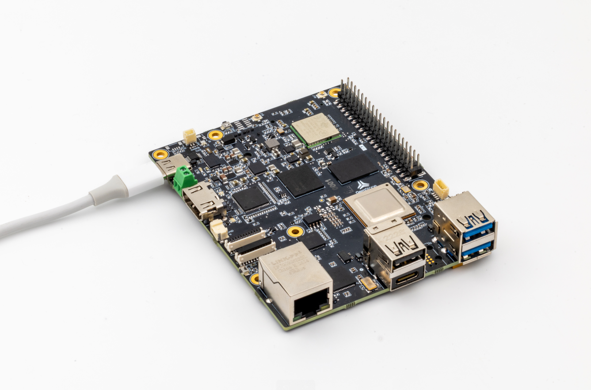
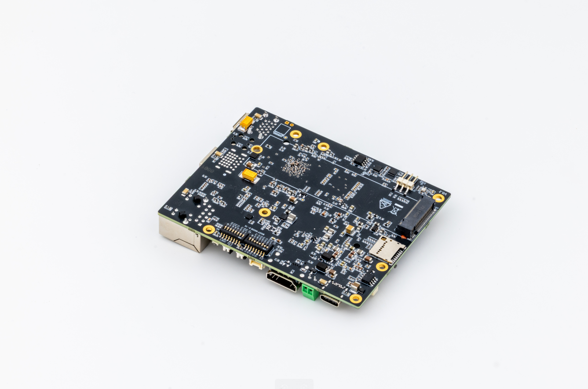

T3 Gemstone O1
 T3 Gemstone O1 board layout - front |
 T3 Gemstone O1 board layout - back |
This page presents T3 Gemstone O1 – High-performance development board based on Texas Instruments AM67A processor, which runs NuttX on main domain Cortex-R5F core.
Features
- Processor (TI AM67A)
Quad-core 64-bit ARM Cortex-A53 @1.4 GHz for running high-level operating systems such as Linux
Dual single-core ARM Cortex-R5F @800 MHz for running real-time MCU applications
Dual 2 TOPS (4 TOPS total) deep learning accelerators for running vision applications
Advanced 50 GFLOPS GPU for high-performance graphics processing
4GB LPDDR4 RAM
- Sensors
InvenSense ICM-20948 IMU (accel, gyro, compass)
Bosch BMP390 barometer
TI HDC2010 humidity and temperature
Storage
- On-board
32GB eMMC flash
512Kbit EEPROM
- Expandable
microSD card slot
M.2 2280 SSD port
- Network Connections
1x Gigabit ethernet
1x CAN bus
Wi-Fi 4 (802.11n)
Bluetooth 5.1, Bluetooth Low Energy (BLE)
- Power
USB Type-C power (5-9V / 3A)
DC power connector (5-12V / 5A)
- Interfaces
UART, I2C and SPI for extensions
S.Bus input
7x PWM servo outputs
Green-red status leds
Real-time clock
Fan with PWM speed control
4x USB ports
2x 4-lane MIPI CSI/DSI
1x HDMI
Warning
NuttX runs on the main-domain R5F core, loaded by U-Boot or Linux via RemoteProc. It relies on the bootloader / Linux Device Manager to have powered and clocked the peripherals it uses (NuttX does not yet run a TISCI client of its own). Support is a work in progress – please see the contributing documentation if you would like to help.
Serial console
The serial console is provided on UART-MAIN1, which is available on the 40-pin HAT:
UART-MAIN1 TX: GPIO-14
UART-MAIN1 RX: GPIO-15
Peripheral Support
Beyond the serial console, the following peripherals have drivers for the main-domain R5F core:
GPIO: pad configuration and read/write over the AM67 GPIO controller.
SPI: MCU_MCSPI0 master, with the hardware chip-select driven per channel (used for the on-board ICM-20948 IMU and LPS22DF barometer).
I2C: WKUP_I2C0 master, registered as /dev/i2c2.
PWM: EPWM0 and EPWM1, channels A and B each, registered as /dev/pwm0 and /dev/pwm1.
eCAP: eCAP1 and eCAP2 in APWM mode, registered as /dev/ecap1 and /dev/ecap2.
IPC: rptun over the NAVSS mailbox, giving OpenAMP rpmsg channels to Linux running on the A53 cores.
Networking: vhost-net presents the R5F as a virtio-net device to the Linux peer, giving an ethernet link over the same rptun transport.
Installation
The arm‑none‑eabi‑gcc toolchain can compile NuttX for R5F cores.
You can obtain a compatible toolchain for your operating system directly from
the official ARM website.
If you’re running a Debian‑based Linux distribution, you can also install the toolchain via your package manager:
$ sudo apt-get update
$ sudo apt-get -y install gcc-arm-none-eabi
Flashing
The board does not provide flash storage for the R5F firmware, so NuttX must be loaded onto the R5F cores through the RemoteProc framework from either U‑Boot or Linux. While the A53 cores run Linux, the R5F cores execute the NuttX operating system.
To load code onto the R5F cores, place the compiled binaries in the
/lib/firmware directory, using the filenames expected by RemoteProc.
During boot, RemoteProc will automatically detect these files and launch the
corresponding programs on the appropriate cores.
Follow the steps below to start NuttX on the main‑domain R5F core via RemoteProc.
Copy the
nuttxfile resulting from the compilation to the/lib/firmwaredirectory with the namej722s-main-r5f0_0-fw.Reboot the board.
You can access NuttShell by connecting a USB-to-TTL device to the UART-MAIN1’s TX (GPIO-14) and RX (GPIO-15) pins on the 40-pin HAT.
$ picocom -b 115200 /dev/ttyACM0
NuttShell (NSH) NuttX-12.11.0
nsh> cat proc/version
NuttX version 12.11.0 8bdbb8c7d5-dirty Oct 22 2025 14:15:42 t3-gem-o1:nsh
nsh>
Configurations
All of the configurations that can be used with t3-gem-o1 board name are
listed below. For example you can select nsh configuration with the
following command:
$ ./tools/configure.sh t3-gem-o1:nsh
nsh
Configures the NuttShell (nsh) located at examples/nsh. This configuration enables a serial console on UART-MAIN1.
netnsh
As nsh, plus networking over the virtio-net link to the Linux peer.
Bring the interface up with ifconfig eth0 <addr> followed by
ifup eth0; the Linux side needs its virtio_net driver bound to the
second vdev.